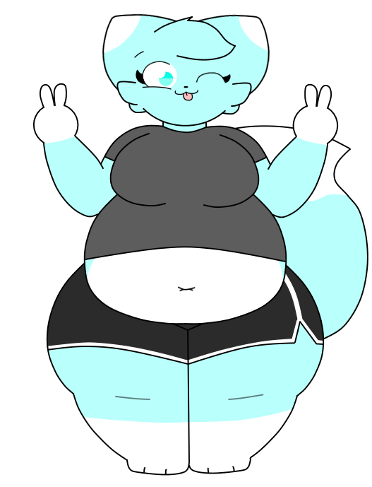

cyn
basic info
Gender: Female
Height: 5'4
Weight: 235 lbs
Sexuality: Pansexual
biography
Cyn (or her full name, Cyn Erisia) is a cyan colored fox, she's the heaviest out of all characters. She wears a grey shirt, and some dolphin shorts. She's a bit shy, but loves to hang out with people, along with giving them affection (mostly hugs). She's also very kind and protective to people, you could say she has a sweet personality!